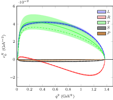
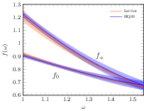
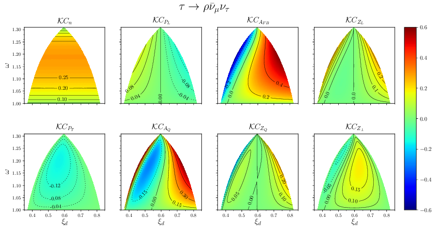

Research
My research has focused on flavour physics and effective theories. In particular, my thesis is about how particles that contain a bottom quark (B-mesons and B-baryons) decay and the effects of physics beyond the standard model. I developed a new formalism to study B-hadrons that decay semileptonically (i.e. to a hadron, a charged lepton and a neutrino), and then I proposed other observables that could be measured too. After that, I briefly studied some details of the LEFT (Low-energy effective theory). My most recent job has led me to study B-mesons again, but this time, I work in their hadronic decays. All my publications can be found in my Inspire-hep profile, but here, I present my favorite.
Selection
The Λc → Λ ℓ νℓ weak decay including new physics

ArXiv e-Print: 2407.09325 [hep-ph]
Journal: JHEP 10 (2024) 137
DOI: 10.1007/JHEP10(2024)137
Abstract
We investigate the decay with a focus on potential new physics (NP) effects in the ℓ = μ channel. We employ an effective Hamiltonian within the framework of the Standard Model Effective Field Theory (SMEFT) to consider generalized dimension-6 semileptonic c → s operators of scalar, pseudoscalar, vector, axial-vector and tensor types. We rely on Lattice QCD (LQCD) for the hadronic transition form factors, using heavy quark spin symmetry (HQSS) to determine those that have not yet been obtained on the lattice. Uncertainties due to the truncation of the NP Hamiltonian and different implementations of HQSS are taken into account. As a result, we unravel the NP discovery potential of the Λ semileptonic decay in different observables. Our findings indicate high sensitivity to NP in lepton flavour universality ratios, probing multi-TeV scales in some cases. On the theoretical side, we identify LQCD uncertainties in axial and vector form factors as critical for improving NP sensitivity alongside better SMEFT uncertainty estimations.
Study of new physics effects in B̅s → Ds τ ν̅τ semileptonic decays using lattice QCD form factors and heavy quark effective theory

ArXiv e-Print: 2304.00250 [hep-ph]
Journal: JHEP 01 (2024) 163
DOI: 10.1007/JHEP01(2024)163
Abstract
We benefit from the lattice QCD determination by the HPQCD of the Standard Model (SM) form factors for the Bs → Ds [Phys. Rev. D101 (2020) 074513] and the SM and tensor ones for the Bs → Ds* (arXiv:2304.03137 [hep-lat]) semileptonic decays, and the heavy quark effective theory (HQET) relations for the analogous B → D decays obtained by F.U. Bernlochner et al. in Phys. Rev. D95 (2017) 115008, to extract the leading and sub-leading Isgur-Wise functions for the B → D decays. Further use of the HQET relations allows us to evaluate the corresponding scalar, pseudoscalar and tensor form factors needed for a phenomenological study of new physics (NP) effects on the b → c semileptonic decay. In this work, we conduct a study of NP effects on the semileptonic decays by comparing tau spin, angular and spin-angular asymmetry distributions obtained within the SM and three different NP scenarios. As expected from SU(3) light-flavor symmetry, we get results close to the ones found in a similar analysis of the B → D case.
The role of right-handed neutrinos in b → c τ(πντ, ρντ, μν̅μντ ) ν̅τ from visible final-state kinematics

ArXiv e-Print: 2107.13406 [hep-ph]
Journal: JHEP 10 (2021) 122
DOI: 10.1007/JHEP10(2021)122
Abstract
In the context of lepton flavor universality violation (LFUV) studies, we fully derive a general tensor formalism to investigate the role that left- and right-handed neutrino new-physics (NP) terms may have in b→c transitions.
We present, for several extensions of the Standard Model (SM), numerical results for the Λb → Λc τ ν̅τ semileptonic decay, which is expected to be measured with precision at the LHCb.
Since the tau lepton is very short-lived, we consider three subsequent tau-decay modes, two hadronic and one leptonic.
Within the tensor formalism that we have developed in previous works, we re-obtain the expressions for the differential decay width written in terms of visible (experimentally accessible) variables of the massive particle created in the tau decay.
There are seven different tau angular and spin asymmetries that are defined in this way and that can be extracted from experiment.
Those asymmetries provide observables that can help in constraining possible SM extensions.